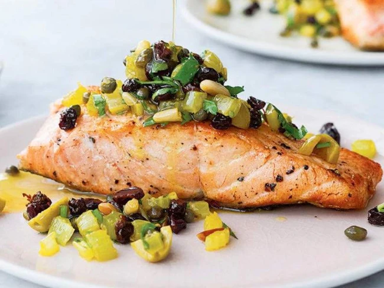

Pan-Fried Salmon Recipe
This is the dish Patrick Dempsey’s character tells Renée Zellweger’s Bridget Jones that he would have brought her on their imaginary second date in Bridget Jones’s Baby. ‘From Ottolenghi,’ says Dempsey, ‘delicious and healthy!’ And easy, we might add! What sounded like a bit of product placement on our part was in fact no such thing. The recipe didn’t even exist on our menu, so this is a retrospective acknowledgement.
Ingredients
- 100g currants
- 4 salmon fillets, skin on and pin-boned (500g)
- 100ml olive oil
- 4 celery sticks, cut into 1cm dice (180g), leaves removed but kept for garnish
- 30g pine nuts, roughly chopped
- 40g capers, plus 2 tbsp of their brine
- 40g large green olives, pitted and cut into 1cm dice (about 8)
- 1 good pinch of saffron threads (1/4tsp), mixed with 1 tbsp hot water
- 20g parsley, roughly chopped
- 1 lemon: finely grate the zest to get 1 tsp, then juice to get 1 tsp
- salt and black pepper
Method
- Cover the currants with boiling water and set aside to soak for 20 minutes while you prep the salmon and make the salsa.
- Mix the salmon with 2 teaspoons of oil, 1/3 teaspoon of salt and a good grind of pepper. Set aside while you make the salsa.
- Put 75ml of olive oil into a large sauté pan and place on a high heat. Add the celery and pine nuts and fry for 4–5 minutes, stirring frequently, until the nuts begin to brown (don’t take your eyes off them, as they can easily burn). Remove the pan from the heat and stir in the capers and their brine, the olives, saffron and its water and a pinch of salt. Drain the currants and add these, along with the parsley, lemon zest and lemon juice. Set aside.
- Put the remaining 1 tablespoon of oil into a large frying pan and place on a medium-high heat. Once hot, add the salmon fillets, skin side down, and fry for 3 minutes, until the skin is crisp. Reduce the heat to medium, then flip the fillets over and continue to fry for 2–4 minutes (depending on how much you like the salmon cooked). Remove from the pan and set aside.
- Arrange the salmon on four plates and spoon over the salsa. If you have any celery leaves reserved, scatter these on top.
